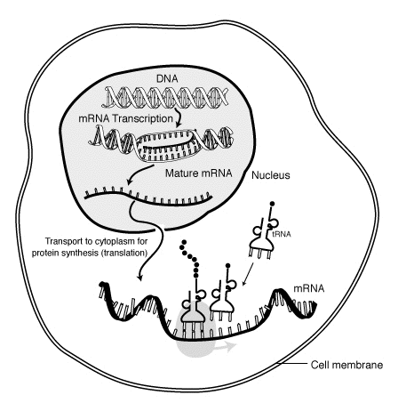
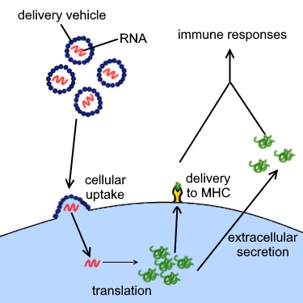

When it comes to the procces of how these vaccines work
there are two main principles
In molecular biology, messenger ribonucleic acid (mRNA) is a single-stranded molecule of RNA that corresponds to the genetic sequence of a gene, and is read by a ribosome in the process of synthesizing a protein. mRNA is created during the process of transcription, where an enzyme (RNA polymerase) converts the gene into primary transcript mRNA (also known as pre-mRNA). This pre-mRNA usually still contains introns, regions that will not go on to code for the final amino acid sequence.
These vaccines are examples of non-replicating viral vector vaccines, using an adenovirus shell containing DNA that encodes a SARS‑CoV‑2 protein. The viral vector-based vaccines against COVID‑19 are non-replicating, meaning that they do not make new virus particles, but rather produce only the antigen which elicits a systemic immune response. Authorized vaccines of this type are the Oxford–AstraZeneca COVID-19 vaccine, the Sputnik V COVID-19 vaccine, Convidecia.
